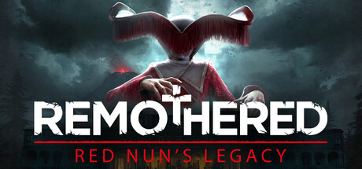

Remothered: Red Nun's Legacy
7/10
Avaliado em 13/11/2026 pelo Bora de Play
Zerei em cerca de 6 horas. Parece um filme de terror: a história e as reviravoltas do final me prenderam mais do que a gameplay, que é simples, mas bem executada.
Minha opinião
Gráficos
Bonitos e com bastante clima. Em alguns trechos o jogo é escuro demais, mais do que precisava.
Desempenho
Rodou bem no meu PC (AMD Ryzen 5 5600X, NVIDIA GeForce RTX 3060 Ti e 16 GB de RAM), com algumas travadinhas pontuais no final.
História
O ponto forte do jogo. O roteiro é muito bom, pesado, e prende do começo ao fim. As reviravoltas do final foram bem surpreendentes.
Jogabilidade
É aquele estilo de jogo com perseguidoras: você só corre, se esconde e usa itens para se soltar, sem como eliminar o inimigo. É simples, mas bem executada. Simples não quer dizer ruim.
Puzzles
Gostei. Alguns momentos ficam vagos, e o mapa não ajuda muito. Teve uma parte em que fiquei rodando em círculos até descobrir que tinha confundido duas escadas.
Dificuldade
As freiras assustam e às vezes aparecem do nada, mas dá para despistar se você se esconder com calma e andar com a lanterna apagada.
Tempo de jogo
Cerca de 6 horas para zerar. É um jogo curtinho.
Áudio
Os passos e a música tensa avisam quando tem alguém por perto e deixam tudo mais tenso. Teve susto que me fez pular da cadeira.
Pra quem eu recomendo
Pra quem curte terror, filmes de terror e jogos de esconder e fugir.
Compensa comprar?
Sim. Pode pagar o preço cheio.
Nota final
7/10. A história vale muito a pena. A gameplay simples segura a nota, mas não estraga a experiência.